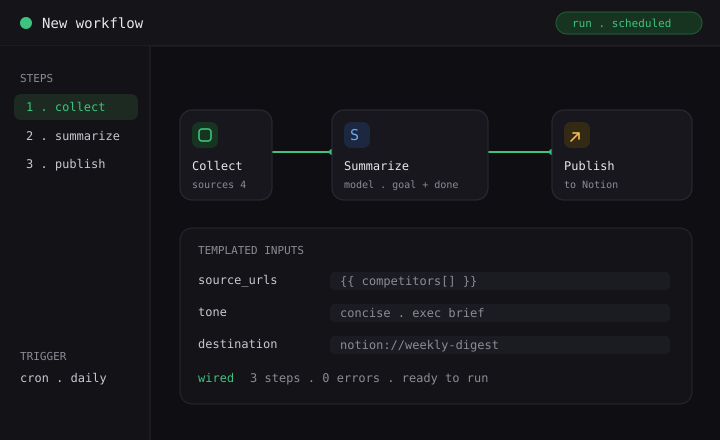
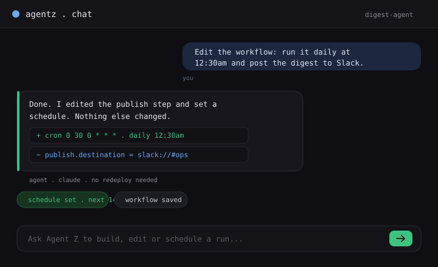
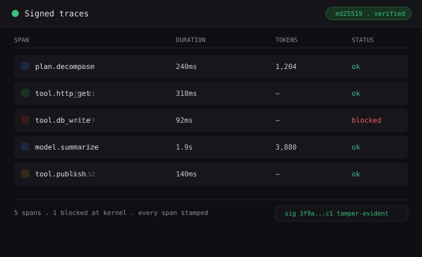
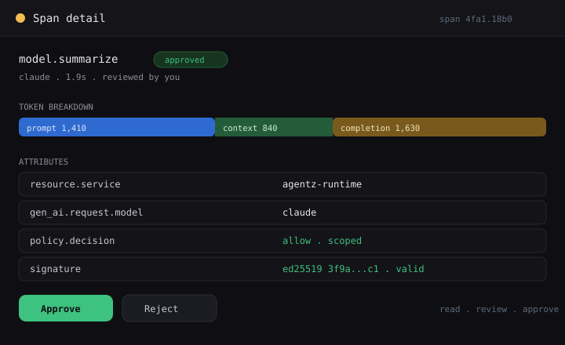
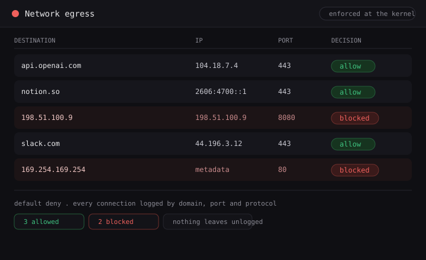
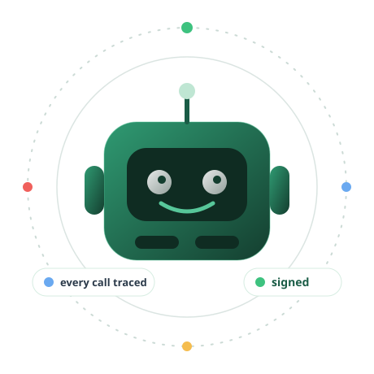
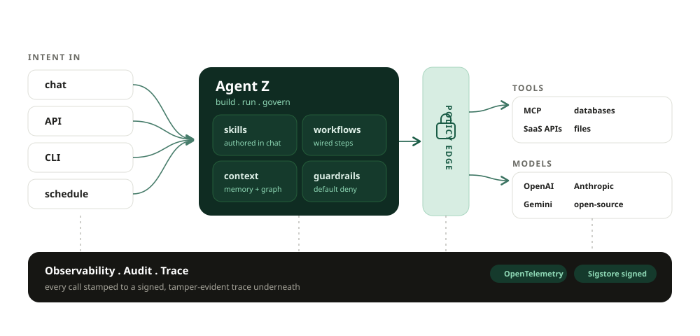

Skills & Workflows
Describe the job. Agent Z writes the skill, wires each step, and templates the inputs.
One platform to build, run, and govern real agents in production.
Trusted by security-first teams · No credit card required



Describe the job. Agent Z writes the skill, wires each step, and templates the inputs.
Talk to your agents the way you think. Ask, and it builds, edits and schedules the run.
Signed, tamper-evident traces you can read, review and approve, down to the token.

Every secret resolves at the edge, scoped to one call, then dropped. The agent holds a placeholder, never the key.

One signed object holds identity, packages, tools and hosts.
Databases, SaaS APIs, MCP tools and files, in a governed graph.
Default deny, enforced at the kernel on every call.
Runtime telemetry logs every egress by domain, port and protocol. Each connection is allowed or blocked at the kernel and recorded, so nothing leaves without a record.

of agent incidents trace back to credentials the agent never needed to hold. Agent Z holds none of them.

Security operations Enrich incidents, respond with a guard.Run guarded response over real tools, with a signed trace behind every step.
Explore → DevOps automationTriage alerts and run guarded remediations on a schedule.
Competitive intelCrawl competitors on a cron. Ship a scoped digest weekly.
Data & reportingPull, summarize and route reports to the right owner.
Customer intelBefore a meeting, pull the company, its stack, and where you fit.
SSO, custom permissions, VPC & air-gap deployment, and kernel-level proof on every call.
Skills, workflows, context and guardrails in the middle. A policy edge on every call. Observability, audit and trace running underneath.


Agent Z is in preview. Leave your details and we'll get you in as we open access, build, run and govern, end to end.